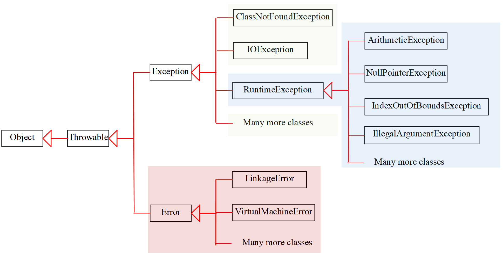
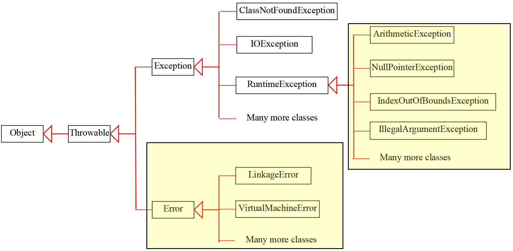
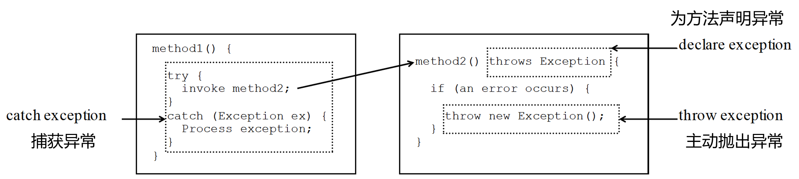

异常机制
面向对象程序设计（Java）
掌握异常类型、抛出与处理、断言；编写更健壮的程序为什么需要异常？
理想情况下，程序会按预期运行；现实中会遇到不可预料的输入与状态。异常用于在运行期报告问题，并提供优雅的处理路径。
public static void main(String[] args) {
test(1, 0); // 当 b 为 0 时会怎样？
}
private static int test(int a, int b){
return a / b; // 未进行判断，运行期可能抛出异常
}异常是“程序遇到非正常情况时抛出的对象”，由JVM或我们手动抛出。
学会识别与处理它，程序就能在出错后继续有序运行。
异常的三大类
- 运行时异常（RuntimeException）：编译器不强制处理；常见如空指针、数组越界、类型转换。
- 编译时异常（Exception）：编译器强制处理（捕获或上抛）；如 IO、反射、文件操作。
- 错误（Error）：严重问题，通常无法恢复；如内存溢出、栈溢出。
它们本质都是类的对象，根类为 Throwable。区分类型有助于选择“是否必须捕获”以及“如何处理”。
System Errors（你管不着的）
System Error 是 Java 虚拟机抛出的用于表示错误的东西。Error 类描述内部系统的错误，如果产生了 Error，你很难为之进行有效操作，通常应交由 JVM 处理。
常见错误：OutOfMemoryError（内存溢出）、StackOverflowError（栈溢出）。
遇到 Error，请从资源限制、算法/数据结构、循环/递归设计上根治问题，而非依赖捕获。
Exceptions（你管的到的）
Exception 类描述由程序或外部环境导致的可预期问题。这些问题可以被你的程序 捕获并处理，从而让系统继续有序运行。
示例：文件不存在（FileNotFoundException）、网络超时（SocketTimeoutException）等。
设计良好的异常处理能为用户提供清晰的反馈，并保护关键路径不被错误击穿。
Checked Exceptions 与 Unchecked Exceptions
- Unchecked：
RuntimeException、Error及其子类。编译器不强制要求你在编译期处理。 - Checked：除上述以外的
Exception子类。编译器强制要求你在编译期捕获或上抛。
“check”指的是编译器是否检查。Checked 更偏向可预期的外部失败；Unchecked 更偏向逻辑错误或编程疏漏。
Unchecked Exceptions
多数情况下，Unchecked Exceptions 反映了编程中的逻辑错误：
NullPointerException：对未初始化对象进行成员访问。IndexOutOfBoundsException：数组/列表下标越界访问。ClassCastException：错误的强制类型转换。
因为可能在任意位置发生，Java 不强制要求你为 Unchecked 异常写管理代码；应通过更严谨的编码习惯来避免。
运行时异常示例
运行时异常在编译阶段无法提前发现，多数源于不安全的操作：
public static void main(String[] args) {
// 空指针异常
Object obj = null;
obj.toString();
// 类型转换异常
Object o = new Object();
String s = (String) o; // ClassCastException
}
这类异常可捕获也可不捕获，但应在编码时避免：判空、谨慎类型转换、边界检查。
编译时异常与 throws
编译时异常要求在编译阶段做出处理：要么捕获，要么上抛。
// Object#clone 明确声明可能抛出异常
protected native Object clone() throws CloneNotSupportedException;
// 自定义方法上抛
private static void test() throws Exception {
throw new Exception("我是编译时异常！");
}
当方法可能失败且调用者有能力处理时，用编译时异常提示调用者“别忘了处理”。
方法声明中的 throws（Checked）
每个方法都应声明“可能抛出的” Checked Exception（不一定真的发生）。
public void myMethod() throws IOException {
// ...
}
public void myMethod() throws IOException, OtherException {
// ...
}为调用者提供明确契约：该方法可能失败，调用者需在编译期考虑并处理。
错误（Error）示例
错误严重到通常无法通过常规方式恢复，多数应交由JVM处理。
// 栈溢出：无限递归
private static void recur(){
recur();
}
// 内存溢出：申请过大内存
Object[] arr = new Object[Integer.MAX_VALUE];
这类问题更多通过设计优化与资源限制避免，而非用 try-catch 修补。
自定义异常
根据业务语义定义更清晰的失败信号：
// 编译时异常：强制调用方处理
public class BizException extends Exception {
public BizException(String msg){
super(msg);
}
}
// 运行时异常：调用方可选择处理
public class BizRuntimeException extends RuntimeException {
public BizRuntimeException(String msg){
super(msg);
}
}
选择异常基类取决于你是否希望“强制调用方显式处理”。
抛出异常：throw
当入参非法或状态不满足时，及时“失败并告知”。
public static int divide(int a, int b) {
if (b == 0) {
throw new RuntimeException("被除数不能为 0");
}
return a / b;
}
抛出异常时携带明确消息，方便定位问题。
抛出异常：直接式与二段式
// 直接式
throw new TheException();
// 二段式
TheException ex = new TheException();
throw ex;
在实际编码中二者等价；二段式适合在构造异常前收集上下文信息。
捕获异常：try-catch
捕获后要么修复继续，要么转化传播，不要“吃掉异常”。
public static void main(String[] args) {
try {
Object object = null;
object.toString();
} catch (NullPointerException e){
e.printStackTrace(); // 记录细节
System.out.println("错误信息：" + e.getMessage());
}
System.out.println("程序继续正常运行！");
}
建议记录日志、为用户返回友好提示；避免空的 catch 块。
多重捕获与顺序
从具体到一般排列 catch；或使用多异常合并。
try {
int[] arr = new int[1];
arr[1] = 100; // 数组越界
} catch (NullPointerException e) {
// ...
} catch (IndexOutOfBoundsException e) {
// ...
} catch (RuntimeException e) { // 父类放在最后
// ...
}
// 或者：
try {
// ...
} catch (NullPointerException | IndexOutOfBoundsException e) {
// 统一处理多种异常
}
父类在前会“吞掉”子类；合并捕获适合统一处理策略。
异常的再抛出（rethrow）
在捕获后完成必要操作（记录日志、释放资源），再将异常抛回上层决定。
try {
// statements
} catch (TheException ex) {
// 记录日志/清理资源
throw ex; // 再抛出，让上层处理
}
再抛出有助于保留调用栈与原始语义；避免在底层“吞掉”关键异常。
finally：收尾工作必执行
无论是否发生异常，资源释放与收尾逻辑都应放在 finally。
try {
int a = 10; a /= 0;
} catch (ArithmeticException e){
// 处理异常
} finally {
System.out.println("收尾：关闭资源/恢复状态");
}
try 块至少配合一个 catch 或 finally；异常未捕获时，finally 仍会执行。
try-catch-finally 执行顺序示例
try {
statement1;
statement2;
statement3;
}
catch(Exception1 ex) {
handling ex;
}
catch(Exception2 ex) {
inCatchStatement;
throw ex;
}
finally {
finalStatements;
}
Next statement; // 不可达（当 statement2 抛 Exception2 且被再抛出）- 这里假设 statement2 抛出 Exception2 → 进入第二个 catch。
- 执行 inCatchStatement 后，执行 finally 的 finalStatements。
- finally 执行完毕，异常继续向上抛出（rethrow），Next statement 不会被执行。
- 若未抛异常或异常被处理且未再抛出，则 finally 后继续执行 Next statement。
异常路径中，finally 总会先于异常传播执行；这保证资源释放的确定性。
异常上抛与传递
当前层不处理，可用 throws 交由上层决策。主方法上抛最终交由JVM。
private static void mayFail() throws java.io.IOException {
throw new java.io.IOException("IO 失败");
}
public static void main(String[] args) throws java.io.IOException {
mayFail(); // 继续上抛
}
合理的异常传递能让“最了解上下文”的层来处理问题。
断言表达式（assert）
用于测试与调试，在开启断言时对不变量进行校验；失败抛 AssertionError。
public static void main(String[] args) {
int a = 10;
assert a > 10 : "a 必须大于 10";
}
断言默认关闭，需通过虚拟机参数开启；生产代码中谨慎使用，仅用于开发/测试阶段。
小结与自习建议
- 明确异常分类：运行时 vs 编译时 vs 错误。
- 用
throw早失败，携带清晰错误信息。 - 用
try-catch-finally做到有记录、有恢复、无吞噬。 - 上抛让更合适的层处理；断言守护不变量。
练习
- 实现
safeDivide(int a, int b)：b 为 0 时抛业务异常；调用处捕获并打印友好提示。 - 编写读取文件方法：声明可能的 IO 异常，上层做重试或错误提示。
- 构造一个多 catch 栈：分别处理空指针、越界与其父类，体验顺序影响。
带着“如何让程序更健壮”的视角阅读并实践，逐步形成自己的异常处理习惯与规范。